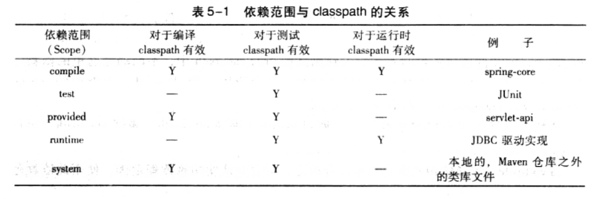
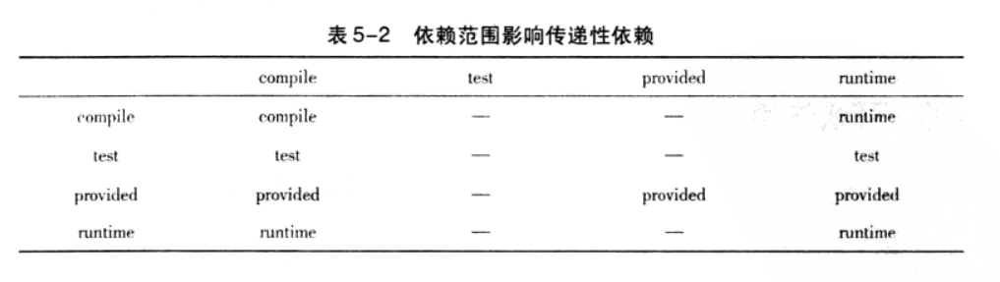
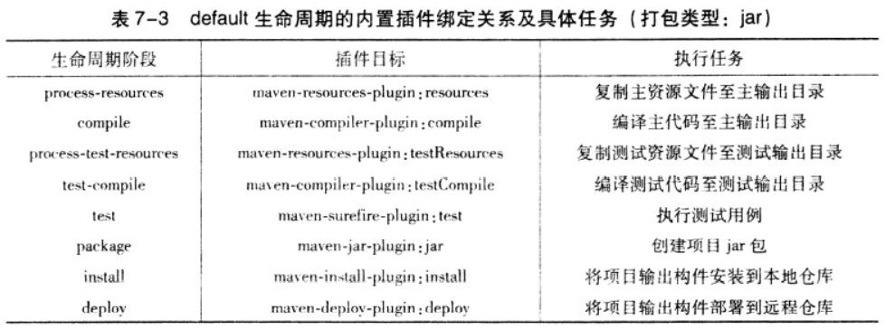
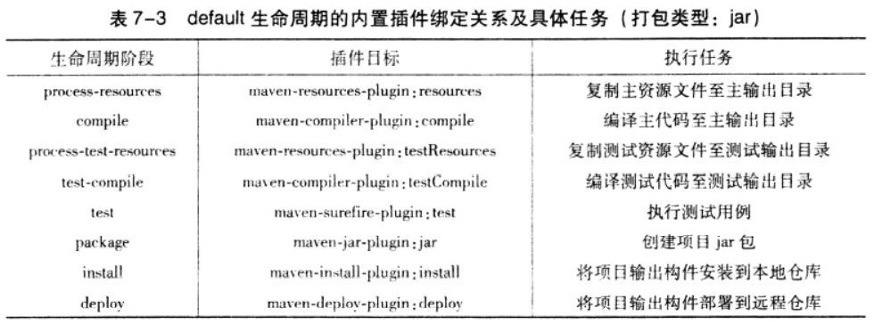

maven基础概念
如果pom中某个jar依赖定义的是release/latest版本，buid项目时根据仓库解析依赖的机制，如果本地有这个两个版本那么maven会直接引用本地的构件（这种解析机制会产生远程仓库/私服已经更新过这两个发布版本的构件，但是本地有这个构建，maven不会去更新远程仓库的最新构件，而是会使用本地的老版构件）
如果pom中某个依赖定义的是snapshot版本，当buid项目时根据仓库解析依赖的机制，会自动去更新本地仓库的版本（这里版本的选择时通过maven-metadata.xml中相关标签所决定的），然后引用最新发布的版本
1.仓库解析依赖的机制
 当本地仓库中没有依赖构件的时候，maven会自动从远程仓库下载；当依赖版为快照版本的时候，maven会自动找到最新的快照。这背后的依赖解析机制可以概括如下：
- 当依赖的范围是system的时候，maven直接从本地文件系统解析构件
- 根据依赖坐标计算仓库路径后，尝试直接从本地仓库寻找构件，如果发现相应构件，则解析成功
- 再本地仓库不存在相应构件的情况下，如果依赖的版本时显式的发布版本构件，如1.2、2.1-beta-a等，则遍历所有的远程仓库，发现后，下载并解析使用
- 如果依赖的版本式release或者latest，则基于更新策略读取所有远程仓库的元数据groupid/artifactid/maven-metadata.xml.将其与本地仓库的对应元数据合并后，计算出release或者latest真实的值，然后基于这个真实的值检查本地和远程仓库，如步骤2和3
- 如果依赖的版本式snapshot，则基于更新策略读取所有远程仓库的元数据groupid/artifactid/maven-metadata.xml，将其与本地仓库的对应元数据合并后，得到最新快照版本的值，然后该值检查本地仓库，或者从远程仓库下载。
- 如果最后解析得到的构件版本是时间戳格式的快照，如1.4.1-20220524.121450-121.则赋值其时间戳格式的文件至非时间戳格式，如snapshot，并使用该非时间戳格式的构件。
当依赖的版本不明晰的时候，如release、latest和snapshot，maven就需要基于更新远程仓库的更新策略来检查更新。这里的检查更新是通过pom文件的<repository>中的子标签<release>、<snapshot>、<enable>来配合完成的，只有开启了对于发布版本的支持时，才能访问该仓库的发布版本的构件信息，对于快照版本也是同理；其次要注意的是<release>和<snapshot>的子元素<updatePolicy>，该元素配置了检查更新的频率，每日检查更新、永远检查更新、从不检查更新、自定义时间间隔检查更新等。最后，用户还可以从命令行加入仓库-U，强制检查更新，使用参数后，maven就会自动忽略<updatePolicy>的配置
2.help插件相关使用
- 以xml格式展示有效POM mvn help:effective-pom
- 列出当前已激活的profile mvn help:active-profiles
- 列出当前工程所有可用profile mvn help:all-profiles
- 描述一个插件或Mojo的属性 mvn help:describe
- 为当前工程以XMl格式展示计算得到的settings设置 mvn help:effective-settings
- 计算用户再交互模式下给出的Maven表达式 mvn help:evaluate
- 展示平台详细信息列表，如系统属性和环境变量 mvn help:system
3.依赖解析常用命令
- 列出依赖集合 mvn dependency:list
- 列出依赖树 mvn dependency:tree
- 分析依赖 mvn dependency:analyze
3.裁剪反应堆
一般来说，用户会选择构建整个项目或者选择构建单个模块，但有些时候，用户会想要仅仅构建完整反应堆中的某些模块。换句话说，用户需要实时地裁剪反应堆。
maven提供很多地命令行选项支持裁剪反应堆，输入mvn -h可以看到这些选项：
- -am,--also-make 同时构建所列模块地依赖模块
- -amd,-also-make-dependents 同时构建依赖于所列模块地模块
- -pl,--projects<arg>构建指定地模块，模块间用逗号分隔
- -rf,-resume-from<arg>从指定地模块回复反应堆
案例一：
mvn clean install -pl com.weaver:weaver-customer-service -amd -rf com.weaver:weaver-customer-loglayer
案例二：
mvn clean install -rf com.disaster:maven-test
案例三：
mvn clean install -pl com.disaster:maven-test -am
4.maven测试
- 动态指定要运行地测试用例 mvn test -Dtest=*Test,测试类名2 (支持测试类名*TEST这种高级赋值方式)
- 跳过测试案例运行 mvn package -DskipTests
- 跳过测试案例编译和运行 mvn package -Dmaven.test.skip=true
5.插件
 
6.灵活的构建
- maven属性：
- 内置属性：主要有两个常用内置属性-----${basedir}表示根目录，即包含pom.xml文件的目录；${version}表示项目版本
- POM属性：用户可以使用该类属性引用POM文件中对应元素的值。例如${project.artifactId}就对应了<project><artifactId>元素的值，常用的POM属性包括：
- ${project.build.sourceDirectory}:项目的主源码目录，默认炜src/main/java
- ${project.build.testSourceDirectory}:项目的测试源码目录，默认为src/test/java/
- ${project.build.directory}：项目构建输出目录，默认为target/
- ${project.outputDirectory}: 项目主代码编译输出目录，默认为target/classes/
- ${project.testOutputDirectory}:项目测试代码编译输出目录，默认为target/test-classes/
- ${project.groupId}:项目的groupId
- ${project.artifactId}:项目的artifactId
- ${project.version}:项目的version，与${versiion}等价
- ${project.build.finalName}:项目打包输出文件的名称，默认为${project.artifactId}-${project.version}
- 自定义属性：用户可以再POM的<properties>元素下定义Maven属性
- setting属性：与POM属性同理，用户使用以settings开头的属性引用settings.xml文件中的XML元素的值，如常用的${settings.localRepository}指向用户本地仓库的地址
- Java系统属性：所有java系统属性都可以使用Maven属性引用，例如${user.home}指向了用户目录。用户可以使用mvn help:system 查看所有的java系统属性
- 环境变量属性：所有环境变量都可以使用env开头的Maven属性引用，例如${env.JAVA_HOME}指代了JAVA_HOME环境变量的值。用户以k使用mvn help:system查看所有的环境变量
- ${project.artifactId}: